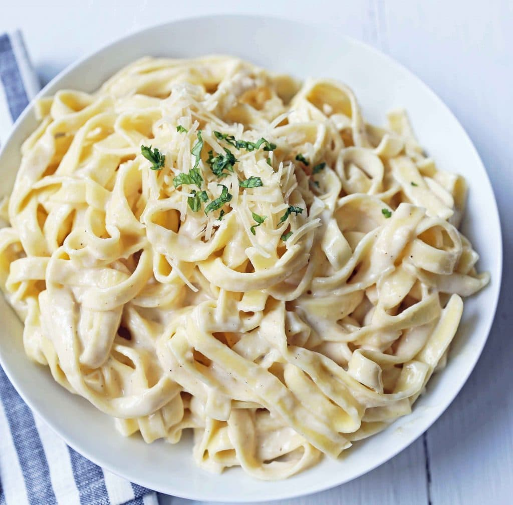

Fettuccine Alfredo Recipe

Description
Fettuccine pasta topped with a homemade rich decadent alfredo sauce.
This is the perfect fettuccine alfredo, perfectly balanced with flavors to die for!
Ingredients
- 1 lb Fettuccine Pasta
- 6 Tablespoons Butter
- 1 Garlic Clove (minced)
- 1 ½ cups Heavy Cream
- ¼ teaspoon Salt
- 1 ¼ cup Shredded Parmesan Cheese
- ¼ teaspoon Pepper
- 2 Tablespoons Italian Parsley (optional)
Steps
- In a large pot, heat water over high heat until boiling. Add salt to season the water. Once it is
boiling,
add fettuccine and cook according to package instructions.
- In a large skillet or pan, heat butter over medium heat. Add minced garlic and cook for 1 to 2 minutes.
Stir
in heavy cream.
- Let heavy cream reduce and cook for 5 to 8 minutes. Add half of the parmesan cheese to the mixture and
whisk
well until smooth. Keep over heat and whisk well until cheese is melted.
- Save some pasta water. The pasta water is full of flavor and can be used to thin out the sauce.
- Toss alfredo sauce with fettuccine pasta and add half of the parmesan cheese. Once it is tossed, garnish
with the remaining parmesan cheese. Add a little pasta water if it needs to be thinned out.
- Garnish with Italian parsley, if so desired.